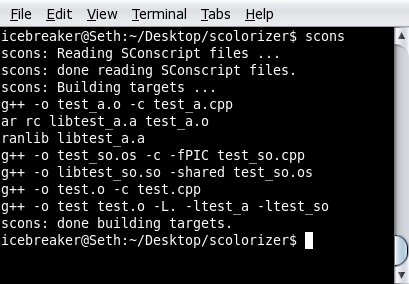
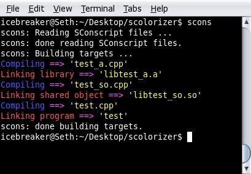

Without colorizer:
With colorizer:
See the Getting Started wiki page for more information.
You can download this project in either zip or tar formats.
You can also clone the project with Git by running:
$ git clone git://github.com/icebreaker/scolorizer